Project 3 · Part A
Flow Matching and Denoising
Part A: Denoising and Generation
These experiments follow one cardinal photograph through noise interpolation and denoising with a pretrained flow model, then explore generating new images from random noise.
1.1 · Constructing Noisy Training Inputs
A single Gaussian noise sample is interpolated with the clean image. At t = 0 the input is noise; as t approaches 1, more of the original image is retained.
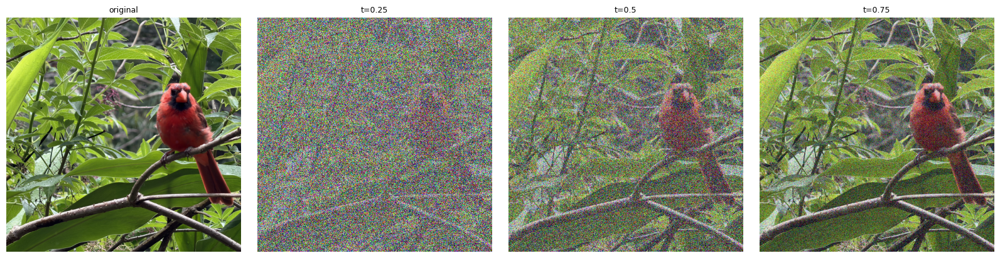
1.2 · Gaussian Blur
The same noisy image is blurred at three Gaussian scales. Larger sigma removes more high-frequency detail and produces a smoother estimate.
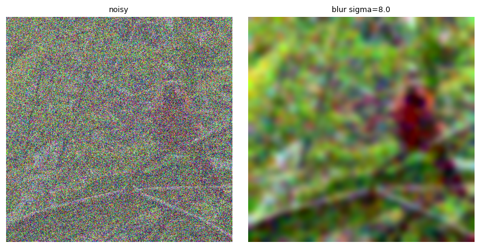
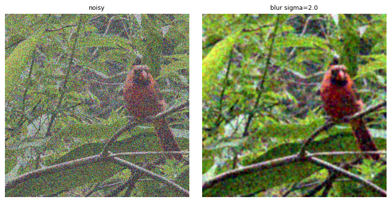
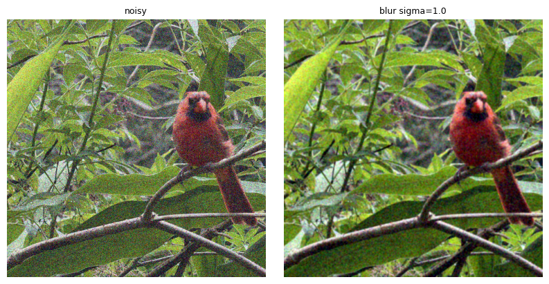
1.3 · One-Step Denoising
Using the text condition “a high quality photo,” the pretrained flow model predicts velocity at each noisy input. A single integration step estimates the clean endpoint; the model output is treated as velocity, not as noise.
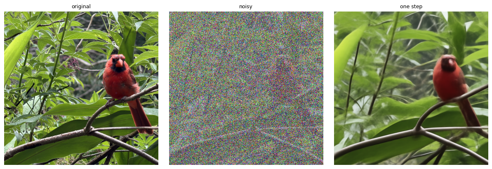
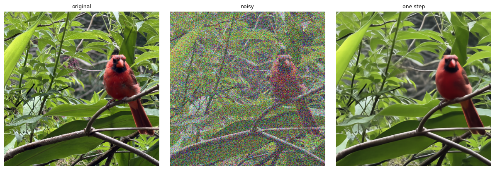
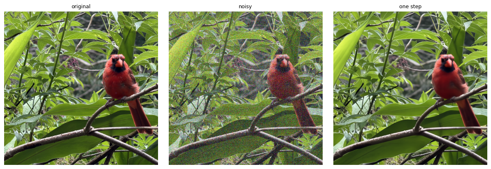
1.4 · Visualizing Velocity
For each saved noisy input, the predicted update is compared with the ground-truth update computed from the known clean image and noise sample. The RGB RMS error map highlights where the two updates differ most. Both update visualizations use a shared symmetric color scale, and the error maps share a linear display range across time points.
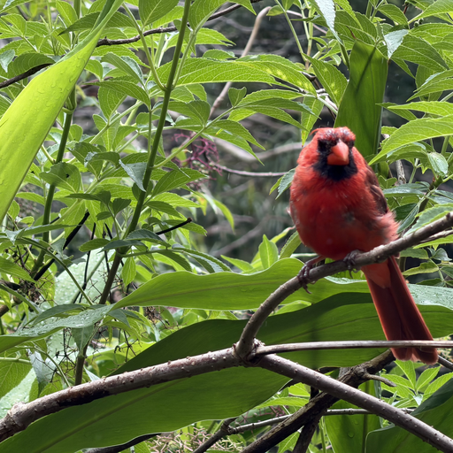
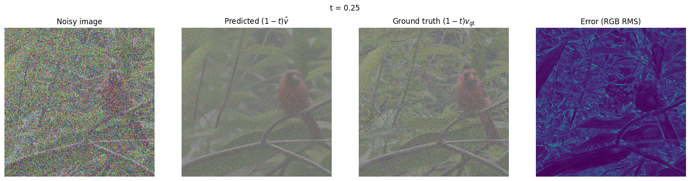
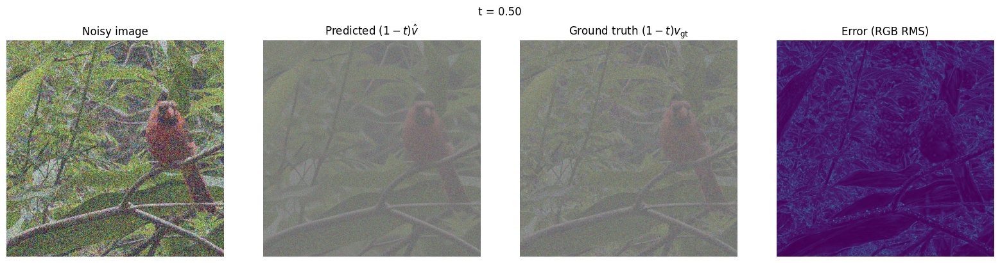
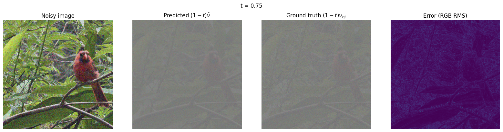
1.5 · Iterative Denoising
Starting from the saved noisy input at t = 0.50, these checkpoints show the initial state, every fifth update, and the final image after 25 updates at t = 1.00.
Comparison using the same noisy input
The three denoising results below start from the same t = 0.50 noisy cardinal input. The original image is included as a reference.
1.6 · Generating Images from Noise
For these generations, I applied a −6769 adjustment to the random noise, as in Section 2.1. The five outputs below retain the seed labels from my results: 180 through 184.
Observations
The outputs vary substantially in subject, pose, framing, and background. Seeds 181 and 183 produce the clearest, most coherent portraits, with recognizable facial features and relatively consistent proportions. Seed 180 has ghosted facial and hand details, seed 182 is heavily blurred with unclear scene structure, and seed 184 shows distorted body proportions.
Changing the starting noise produces very different images, but it does not guarantee consistent realism. All five samples depict people, while their sharpness and anatomical consistency vary noticeably.
2.1 · Classifier-Free Guidance (CFG)
To strengthen text conditioning, classifier-free guidance combines the model’s velocity predictions for “a high quality photo” and the empty-string prompt at the same image and time. I use v_cfg = v_c + w * (v_c - v_u), where v_c is the conditional prediction and v_u is the unconditional prediction. In this convention, w = 0 gives ordinary conditional sampling.
Prompt: “a high quality photo” · Guidance weight: w = 7 · Euler step size: h = 0.02 · Seed labels: 180–184.
I applied the same −6769 adjustment to the random noise as in Section 1.6.
Comparison with Section 1.6
Compared with the corresponding seed-labeled outputs in Section 1.6, these CFG samples are more consistently photographic, with clearer faces and more coherent visible anatomy. Seed 180 no longer has the prominent ghosting, seed 182 resolves into a recognizable seated portrait instead of a blurred scene, and seed 184 has a more plausible head-and-shoulders composition. Seeds 181 and 183 were already relatively clear, but now have more defined facial details.
The subjects, hairstyles, poses, and framing still vary, but all five results converge on polished portrait-style photographs. Guidance changes the generated content as well as its clarity; it does not simply sharpen the earlier images.